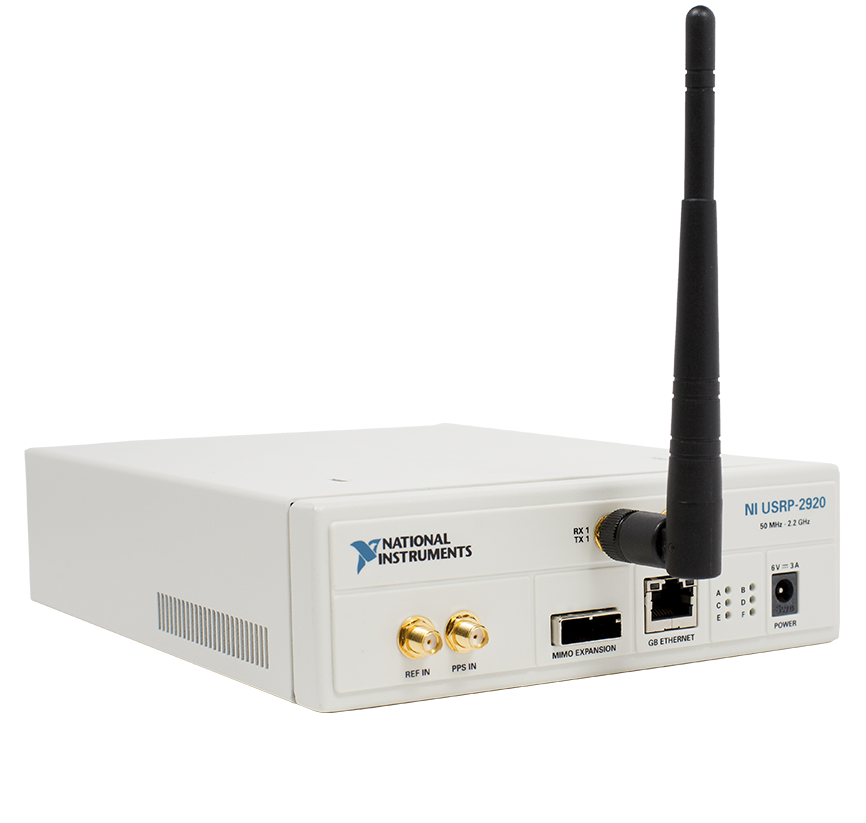

NI USRP

23 готовых устройства для создания SDR систем разного масштаба. Диапазон рабочих частот до 6ГГц, ПЛИС Xilinx Kinex-7, мгновенная полоса до 160 МГц, поддержка многоканальных решений, синхронизация с GPS – мощный инструментарий в умелых руках. Полная поддержка LabVIEW. Быстрая перестройка частот, выбор типа модуляции, подстройка параметров работы приёмопередатчиков, поддержка множества цифровых протоколов, корректировка качества сигнала – получаем лучшее SDR решение для быстрого результата.